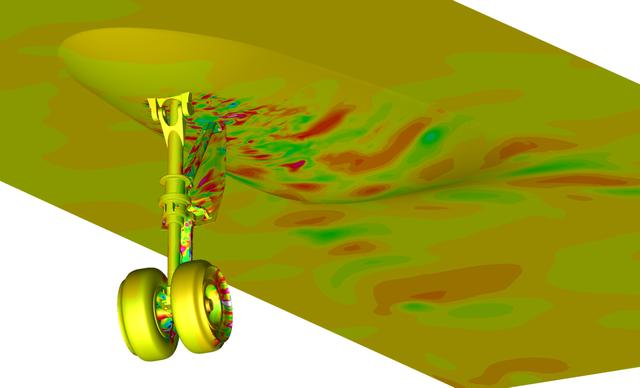
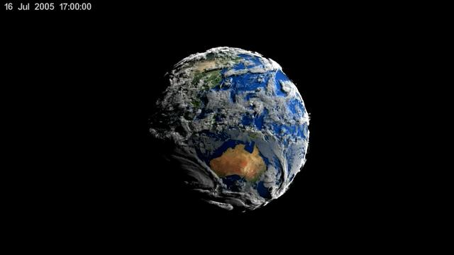

Naziemny bottleneck energetyczny i sieciowy
Notatka raportu "Orbitalne centra danych". Kluczowe źródła: źródło 1, źródło 2.
W skrócie
Naziemne centra danych (DC, data center - obiekt z serwerami liczącymi i przechowującymi dane) zderzają się z trzema twardymi ścianami fizycznymi: prądu, sieci przesyłowej i wody. Według IEA zużycie prądu przez DC ma podwoić się z 415 TWh w 2024 r. (1 TWh = miliard kilowatogodzin) do 945 TWh w 2030 r. źródło, a w amerykańskich kolejkach przyłączeniowych czeka już 1,84 TW mocy (1 TW = 1000 GW), z czego do uruchomienia dochodzi tylko ~20% źródło. Dla inwestora to wąskie gardło jest jednocześnie zagrożeniem (opóźnienia, kary, kary umowne) i okazją (dostawcy transformatorów, gazu, jądra/SMR oraz - w tezie spekulacyjnej - operatorzy orbity). Tempo zmian jest bardzo szybkie po stronie popytu (ok. 15%/rok), ale powolne po stronie infrastruktury (transformatory 128 tygodni, linie przesyłowe 7-11 lat na samo permitting). Kto kontroluje moc i sprzęt sieciowy, ten dyktuje warunki - reszta czeka w kolejce lub przepłaca.
Spółki powiązane
Notowane spółki produkujące podzespoły/technologie związane z tym tematem. Pełne omówienie: spółki, dla których nisza to >=33% przychodów; skrótowe: zdywersyfikowane konglomeraty. Zob. też Słownik i Spółki z ekspozycją na giełdy europejskie.
Producenci kluczowi (>=33% przychodów z niszy - omówienie pełne):
- Bloom Energy Corporation (BE) - Ogniwa paliwowe SOFC dla centrów danych
- GE Vernova Inc. (GEV) - Turbiny gazowe i infrastruktura sieciowa dla DC
- Vertiv Holdings Co (VRT) - Zasilanie i precyzyjne/cieczowe chłodzenie DC
- Constellation Energy Corporation (CEG) - Największy operator floty jądrowej w USA (PPA z hyperskalerami)
- Oklo Inc. (OKLO) - Mikroreaktory (SMR/fission) na potrzeby DC
- Talen Energy Corporation (TLN) - Energia jądrowa (Susquehanna), sąsiedztwo z DC
- Siemens Energy AG (ENR) 🇪🇺 - Turbiny gazowe i technologie sieciowe (EU)
Pozostali dominujący gracze (nisza to ułamek przychodów - omówienie skrótowe):
- Eaton Corporation plc (ETN) - Zasilanie DC (UPS, switchgear) + chłodzenie (Boyd Thermal)
- Schneider Electric SE (SU) 🇪🇺 - Zasilanie i chłodzenie DC (EcoStruxure, Motivair)
Powiązane wątki
Mapa powiązań tematycznych - jak ten wątek łączy się z resztą raportu.
- Wprowadzenie i architektury - to jest popytowa motywacja całej dziedziny ODC
- Energetyka kosmiczna - orbita ma omijać niedobór mocy i kolejki przyłączeniowe
- Ekonomika i TCO - koszt naziemnego DC to benchmark dla wariantu orbitalnego
- Sentyment i moratoria - protesty i moratoria pogłębiają naziemne wąskie gardła
- Środowisko - woda chłodząca i grunt jako lokalne ograniczenia środowiskowe
Zapotrzebowanie DC na moc i prognozy AI compute
Punktem odniesienia jest raport IEA "Energy and AI". IEA podaje, że dziś DC zużywają ok. 415 TWh/rok, czyli ok. 1,5% globalnego zużycia prądu w 2024 r. źródło. W scenariuszu bazowym ma to wzrosnąć do ok. 945 TWh do 2030 r., tj. niespełna 3% globalnego zużycia źródło. Wzrost wynosi ok. 15%/rok w latach 2024-2030 - ponad czterokrotnie szybciej niż całe pozostałe zużycie prądu - po tym jak przez ostatnie pięć lat rósł 12%/rok źródło. Motorem jest AI: zużycie przez "accelerated servers" (serwery z akceleratorami, czyli kartami GPU/ASIC do uczenia maszynowego) ma rosnąć 30%/rok, podczas gdy serwery konwencjonalne tylko 9%/rok, a accelerated servers odpowiadają za prawie połowę przyrostu netto zużycia DC źródło. Implikacja dla inwestora: popyt na moc jest napędzany jednym czynnikiem (AI compute), więc cała teza opiera się na trwałości boomu AI.
xychart-beta
title "Zuzycie pradu DC wg IEA: 2024 vs 2030"
x-axis ["2024", "2030"]
y-axis "TWh/rok" 0 --> 1000
bar [415, 945]
Rys. 63 - Zużycie prądu przez centra danych podwaja się z 415 TWh (2024) do 945 TWh (2030) w scenariuszu bazowym IEA. Dane: IEA - Energy and AI.

Rys. 64 - Naziemne DC: ARC-2012-ACD12-0020-006. Źródło: NASA, licencja: public domain.
#grafika #naziemny-bottleneck-energetyczny-i-sieciowy #dc-naziemne #compute

Rys. 65 - Naziemne DC: New NASA 3D Animation Shows Seven Days of Simulated Earth Weather. Źródło: NASA, licencja: public domain.
#grafika #naziemny-bottleneck-energetyczny-i-sieciowy #dc-naziemne #compute
Inne źródła idą dalej. Dokument regulacyjny SpaceX złożony do FCC (amerykański regulator telekomunikacji) prognozuje ponad podwojenie globalnego popytu DC do 2035 r. - do ok. 1200-1700 TWh, do 4% światowego zużycia źródło. Analiza Introl podaje ścieżkę 460 TWh (2024) -> 1000 TWh (2030) -> 1300 TWh (2035) źródło, a Luminix - 700 TWh w 2025 r. rosnące do 3500 TWh w 2050 r. źródło. Rozrzut prognoz (od 945 TWh do 1700 TWh na 2030/2035) sam w sobie jest ryzykiem - inwestor nie powinien traktować żadnej liczby jako pewnika.
Kluczowa asymetria czasowa: IEA wskazuje, że DC można uruchomić w 2-3 lata, ale szerszy system energetyczny wymaga dłuższych terminów na planowanie i budowę źródło. To źródło całego bottlenecku - moc obliczeniowa rośnie szybciej niż infrastruktura, która ją zasili.
Hyperscaler PPA / kontrakty mocy
PPA (Power Purchase Agreement - długoterminowa umowa zakupu energii bezpośrednio od producenta) to główne narzędzie hyperscalerów (operatorów chmury skali globalnej) do zabezpieczania mocy. Microsoft ma zakontraktowane ~10 500 MW, Amazon (AWS) ~8000+ MW, Google ~6000 MW OZE + 500 MW jądra do 2030 r., a Meta wystawiła zapytanie (RFP) na 1-4 GW jądra źródło. Według innego zestawienia Microsoft prześcignął Amazon jako największy nabywca czystej energii z 40 GW zakontraktowanymi pod koniec 2025 r. źródło, a AWS ma >20 GW OZE źródło. Skala zakupów jest tak duża, że zmienia rynek: w 2024 r. Big Tech odpowiadał za 43% wszystkich kontraktów PPA na czystą energię na świecie, a ceny PPA wzrosły o 35% w samym 2024 r., głównie przez zakupy hyperscalerów źródło. Implikacja: popyt DC podbija ceny energii dla wszystkich - to ryzyko regulacyjne i reputacyjne, bo rosną rachunki gospodarstw domowych. Świeże transakcje: Google podpisał z Clearway trzy 20-letnie PPA na 1,17 GW źródło oraz z TotalEnergies na 1 GW solaru w Teksasie źródło.
Kolejki przyłączeniowe i ograniczenia sieci
Interconnection queue (kolejka przyłączeniowa) to lista projektów czekających na zgodę operatora sieci na podłączenie - i to tu boom najpierw się dławi. W kolejkach amerykańskich ISO (Independent System Operator - niezależny operator systemu przesyłowego) czeka ponad 2600 GW mocy wytwórczej i magazynowej, a mediana czasu od wejścia do kolejki do uruchomienia komercyjnego wydłużyła się do ok. 5 lat źródło. Allianz Research podaje, że aktywne wnioski o przyłączenie sięgają 1,84 TW - więcej niż cała zainstalowana moc wytwórcza USA - przy czym tylko ~20% wniosków dochodzi do uruchomienia, reszta jest porzucana przez spekulację, rosnące koszty i opóźnienia źródło. W hotspotach jak Northern Virginia czas oczekiwania sięga 7 lat źródło. Implikacja: deklarowane GW w kolejkach to mocno zawyżona miara - inwestor powinien dyskontować je o ~80%.
pie showData
title Kolejki przylaczeniowe USA: los wnioskow (1,84 TW)
"Dochodzi do uruchomienia (~20%)" : 20
"Porzucone lub niezrealizowane (~80%)" : 80
Rys. 66 - Z 1,84 TW aktywnych wniosków o przyłączenie w USA tylko ok. 20% dochodzi do uruchomienia komercyjnego, reszta jest porzucana. Dane: Allianz Research - AI energy.
Skala niezbędnej rozbudowy sieci jest historycznie bezprecedensowa. DOE (Departament Energii USA) szacuje, że do 2050 r. system przesyłowy musi urosnąć 2,1-2,6x w scenariuszu najtańszym i do 3,3x w scenariuszu wysokiego popytu źródło. To oznaczałoby budowę ok. 8000 km linii wysokiego napięcia rocznie, podczas gdy ostatnio tempo wynosiło znacznie poniżej 1000 km rocznie źródło. Realny dystans między potrzebą a tempem to ośmiokrotność - to jest sedno strukturalnego argumentu.
Teksas jest skrajnym przykładem. ERCOT (operator sieci Teksasu) śledzi ~410 GW wniosków o przyłączenie dużych odbiorców, z czego ~87% to centra danych, co stanowi 60-krotny wzrost w pięć lat (z ~6,7 GW w 2025 do ~410 GW w 2030) źródło. Historyczna skuteczność jest niska: spośród mocy, która złożyła wnioski w latach 2000-2019, tylko 13% osiągnęło uruchomienie komercyjne do końca 2024 r. źródło. IEA szacuje, że ograniczenia sieci mogą opóźnić ok. 20% globalnej mocy DC planowanej do 2030 r. źródło. Implikacja: jedna piąta planowanych projektów ma wbudowane ryzyko poślizgu - to bezpośrednie ryzyko dla wycen operatorów DC opartych na pełnym pipeline.
Brak transformatorów i switchgear: lead times
Transformator (urządzenie zmieniające napięcie między siecią a obiektem) i switchgear (rozdzielnica - aparatura łączeniowo-zabezpieczająca) to fizyczne komponenty, których brakuje. POWER magazine (za Wood Mackenzie) podaje, że popyt na transformatory mocy wzrósł o 119% od 2019 r., na transformatory rozdzielcze o 34%, na GSU (generator step-up units - transformatory podwyższające napięcie z generatora) aż o 274%, a na transformatory stacyjne o 116% źródło. Skutkiem jest deficyt rzędu 30% dla transformatorów mocy i 10% dla rozdzielczych źródło. Lead time (czas od zamówienia do dostawy) jest dramatyczny: transformatory mocy ok. 128 tygodni (ok. 2,5 roku), GSU 144 tygodnie, switchgear 44 tygodnie w II kw. 2025 r. źródło. Ceny jednostkowe wzrosły o 77% dla transformatorów mocy i 45% dla GSU źródło. Implikacja: dla DC transformator potrafi zdominować harmonogram - przy lead time 24-48 miesięcy "może zdominować cały harmonogram" projektu źródło.
xychart-beta
title "Lead time sprzetu sieciowego (Q2 2025)"
x-axis ["Switchgear", "Transformator mocy", "GSU"]
y-axis "tygodnie" 0 --> 160
bar [44, 128, 144]
Rys. 67 - Czas od zamówienia do dostawy: switchgear 44 tygodnie, transformatory mocy 128 tygodni, GSU 144 tygodnie. Dane: POWER magazine (za Wood Mackenzie).
Problem jest strukturalny i pogłębiony przez starzejący się park. Ok. 55% transformatorów rozdzielczych w użyciu ma ponad 33 lata, a ok. 40 milionów sztuk jest już po przewidywanym okresie żywotności źródło. Tylko 20% dużych transformatorów jest produkowanych w USA krajowo, a lead time sięga 3 lat źródło. Sytuacja różni się regionalnie: w Europie lead time LPT (large power transformer) wynosi 48-60 miesięcy, a w APAC ok. 12 miesięcy źródło. Implikacja: lokalizacja DC zaczyna zależeć od dostępności sprzętu sieciowego, nie tylko od taniej energii - to przewaga rynków azjatyckich.
Woda chłodząca: zużycie, spory lokalne, susze
Chłodzenie to ukryty koszt DC. Według preprintu arXiv/IEEE ok. 58% prądu zużywanego przez naziemne DC idzie na systemy chłodzenia, a nie na samo liczenie źródło. To właśnie ta liczba jest głównym argumentem zwolenników orbity (próżnia chłodzi pasywnie). Zużycie wody jest duże: typowe DC o mocy 100 MW może zużywać do 2 milionów litrów wody dziennie, tyle co 6500 gospodarstw domowych źródło. HARC szacuje 793 galony wody na MWh, co daje ok. 49 mld galonów rocznie do końca 2025 r. i do 399 mld galonów rocznie do 2030 r. w samym Teksasie (ok. 6,6% zużycia wody w stanie) źródło. Implikacja: woda to rosnące ryzyko regulacyjne i konfliktowe, bo dotyka lokalnych społeczności bezpośrednio.
Lokalizacja pogarsza problem. Ponad dwie trzecie nowych DC zbudowanych od 2022 r. powstaje na obszarach dotkniętych suszą źródło. Pojawiają się limity i spory: w Chandler (Arizona) zużycie wody przez DC jest ograniczone do 115 galonów dziennie na 1000 stóp kwadratowych źródło, a kompleks Project Blue w Tucson ma zużywać do 2000 acre-feet rocznie (ok. 6% zasobów wody odzyskiwanej Tucson Water) źródło. Konkretny przykład Mety: kampus Eagle Mountain w Utah pobrał ponad 35 mln galonów w 2024 r. - ponad dwukrotnie więcej niż w 2021 r. - i zużył ponad 1 mln MWh prądu, prawie pięć razy więcej niż trzy lata wcześniej źródło. Implikacja: konflikty o wodę mogą blokować lub opóźniać projekty w najbardziej atrakcyjnych (tanich, słonecznych) lokalizacjach.
Punktem odniesienia "zero wody" jest Microsoft Project Natick (eksperyment z podwodnym DC): osiągnął WUE (Water Usage Effectiveness - efektywność wykorzystania wody) równe dokładnie 0, wobec naziemnych DC zużywających do 4,8 litra wody na kWh źródło. Implikacja: rozwiązania bezwodne (podwodne, orbitalne) mają realną przewagę środowiskową - ale Natick wciąż jest na etapie badań.
Energia: baseload, powrót do gazu/jądra, SMR dla DC
Baseload (moc podstawowa - stałe, niezależne od pogody zasilanie) jest tym, czego AI potrzebuje, a OZE same go nie dają. Globalny miks zasilania DC to nadal prawie 60% paliwa kopalne, 27% OZE i 15% jądro źródło, przy czym koszty energii to 40-60% kosztów operacyjnych DC AI źródło. Implikacja: energia jest dominującą pozycją kosztową - każda przewaga w cenie/MWh wprost przekłada się na marżę.
pie showData
title Globalny miks zasilania centrow danych
"Paliwa kopalne" : 60
"OZE" : 27
"Jadro" : 15
Rys. 68 - Miks zasilania DC pozostaje zdominowany przez paliwa kopalne (ok. 60%), OZE ok. 27%, jądro ok. 15%. Dane: AIMultiple - AI energy consumption.
Gaz ziemny wraca jako szybkie źródło baseload. Gaz dostarcza 40%+ prądu DC i kosztuje ok. 1290 USD/kW mocy wobec 6417-12681 USD/kW dla jądra źródło. Ale i tu jest wąskie gardło: deweloperzy stawiający na gaz jako prime power mierzą się z 7-letnimi zaległościami w dostawach turbin na niektórych rynkach źródło. Talen Energy ilustruje skalę: wygenerował 40 TWh w 2025 r. (+10% r/r) i zintegrował 2,8 GW efektywnych CCGT (combined-cycle gas turbine - blok gazowo-parowy) źródło.
Jądro i SMR (Small Modular Reactor - mały reaktor modułowy, 10-300 MW) to długoterminowy zakład hyperscalerów. Microsoft zakontraktował restart Three Mile Island (835-837 MW) przez Constellation za ok. 1,6 mld USD na 20 lat (uruchomienie ok. 2028) źródło; Google podpisał 500 MW SMR z Kairos Power w październiku 2024 r. źródło; AWS przejął 960 MW DC zasilane z elektrowni Susquehanna od Talen Energy źródło, a Amazon zainwestował 500 mln USD w X-energy (320 MW startowo, do 960 MW) źródło. Skala niedoboru jest jednak ogromna: Goldman Sachs prognozuje potrzebę 85-90 GW nowego jądra do 2030 r., z czego globalnie dostępne jest mniej niż 10% źródło. Pipeline SMR urósł do 47 GW (Q1 2025, +42%), z DC odpowiadającymi za 39% źródło, a warunkowe umowy odbioru z SMR urosły z 25 GW (koniec 2024) do 45 GW źródło. Kluczowy haczyk czasowy: komercyjne wdrożenie SMR nie jest spodziewane przed 2030-2032 źródło. Implikacja dla inwestora: SMR to opcja na drugą połowę dekady, nie rozwiązanie dzisiejszego deficytu - rynek SMR dla DC wyceniany jest na 6,8 mld USD (2025) z prognozą 40,2 mld USD do 2034 r. (CAGR 22,3%) źródło.
Ziemia, lokalizacja, czas budowy (permitting) jako bottleneck
Permitting (uzyskiwanie pozwoleń administracyjnych) to często najwolniejszy element. Bessemer (BVP) podaje, że między marcem 2024 a 2025 r. 16 projektów DC zostało opóźnionych lub odrzuconych z powodu ograniczeń pozwoleń, McKinsey szacuje ponad 5 mld USD rocznie na samo skomplikowane permitting infrastrukturalne, a ponad 1,5 biliona USD kapitału infrastrukturalnego "tkwi" w pipeline pozwoleń źródło. W rynkach jak Northern Virginia, Dublin czy Singapur proces ciągnie się 2-3 lata źródło, a budowa regionalnych linii przesyłowych zajmuje 7-11 lat na samo permitting źródło. Implikacja: czas-do-rynku jest mierzony w latach - to premiuje graczy z już zabezpieczonymi działkami i przyłączami.
Całkowity czas budowy DC jest długi, ale skracalny. Tradycyjna budowa to 24-48 miesięcy od greenfield do uruchomienia źródło, a rozwiązania prefabrykowane potrafią skompresować to do 12-18 miesięcy źródło. Skala kapitału jest astronomiczna: w 2024 r. Amazon, Microsoft, Google i Meta wydały łącznie ponad 200 mld USD capex (+62% r/r), a w 2026 r. capex hyperscalerów ma przekroczyć 600 mld USD, z czego ok. 75% (ok. 450 mld USD) bezpośrednio na infrastrukturę AI źródło. Na koniec 2025 r. globalny pipeline DC przekroczył 241 GW (+159% od początku roku) źródło. DC Byte zauważa, że w 2024 r. popyt na moc wzrósł o 30%, ale tempo nowej budowy już za nim nie nadąża, a użytkownicy rezerwują przestrzeń 3-4 lata z wyprzedzeniem źródło. Implikacja: rynek jest "pre-leased" na lata naprzód - dobre dla przychodów operatorów, ale sygnalizuje, że podaż jest realnym ograniczeniem.
Kontrowersje
A. Czy ziemski bottleneck jest strukturalny czy przejściowy?
To kluczowe pytanie dla całej tezy orbitalnej - jeśli bottleneck jest przejściowy, droga orbita traci sens.
Strona "strukturalny": budowa linii przesyłowych to 7-11 lat na permitting źródło, lead time transformatorów 128 tygodni źródło, tylko 13% historycznych wniosków doszło do uruchomienia źródło, a DC Byte wprost: "To nie cykl rynkowy. To ograniczenie strukturalne" źródło.
Strona "przejściowy": lead time transformatorów mocy w II kw. spadł o 10 tygodni (do średnio 128 tygodni) źródło, ogłoszono prawie 1,8 mld USD ekspansji produkcji w Ameryce Północnej źródło, ERCOT przechodzi na Batch Study Framework skracający cykle restudy źródło, najostrzejszy niedobór ma się utrzymać "tylko" do 2028-2029, gdy nowa moc i przesył wejdą do eksploatacji źródło, a niektórzy brokerzy twierdzą, że "nie ma realnego niedoboru", a kryzys wynika z błędów zakupowych źródło. Nie ma konsensusu - obie strony cytują tę samą liczbę 128 tygodni, różniąc się jej interpretacją (trend rosnący vs. spadek o 10 tygodni).
B. Czy orbita rozwiązuje bottleneck, czy przenosi go w downlink i infrastrukturę naziemną?
Strona "orbita rozwiązuje": w orbitach słonecznosynchronicznych panele odbierają słońce do ponad 99% czasu źródło; chłodzenie radiacyjne w próżni jest pasywne i bezwodne źródło, co omija 58% energii naziemnej idącej na chłodzenie źródło; SpaceX twierdzi, że 1 mln ton satelitów rocznie (100 kW compute/tonę) dodawałby 100 GW mocy AI rocznie źródło; wg Fierce satelitarne DC mają działać przy 10x niższych kosztach energii źródło.
Strona "orbita przenosi bottleneck": sieci naziemnych DC osiągają ok. 200 Tb/s na blok agregacji, a łącza ground-satellite tylko dziesiątki-setki Gb/s źródło - przepaść 3-4 rzędów wielkości w downlinku; koszt orbity to 51,10 USD/W vs 15,85 USD/W naziemnie i LCOE 1167 USD/MWh vs 426 USD/MWh źródło; NASA OTPS ocenia, że LCOE energii kosmicznej jest 12-31x wyższe niż projekcje naziemne na 2050 r. źródło, a launch to 71-77% kosztów źródło; dostarczenie masy wymaga 2321-3960 startów źródło. Wniosek: orbita eliminuje wodę i kolejki przyłączeniowe, ale tworzy nowy bottleneck w przepustowości downlinku i koszcie startów - to nie zniknięcie, lecz przesunięcie problemu.
C. Czy Microsoft Project Natick udowadnia przewagę alternatyw naziemnych?
Natick osiągnął awaryjność serwerów 1/8 grupy kontrolnej na lądzie, PUE 1,07, WUE 0, wdrożenie w <90 dni, przy 240 kW mocy i 864 serwerach źródło. To pokazuje, że bezwodne, szybko wdrażalne DC są możliwe bez wychodzenia na orbitę. Jednak Microsoft sam zaznacza, że "Project Natick jest na etapie badań" i wciąż jest za wcześnie, by ocenić adopcję komercyjną źródło. Brak potwierdzonych rozbieżności liczbowych - jedyne źródło to oficjalny blog Microsoft, więc kontrowersja dotyczy interpretacji (Natick jako dowód alternatyw vs. wciąż eksperyment), nie sprzecznych danych.
Słowniczek pojęć
- DC (data center) - obiekt z serwerami liczącymi i przechowującymi dane.
- TWh / GW / TW - jednostki energii i mocy: 1 TWh to miliard kilowatogodzin, 1 TW to 1000 GW.
- AI compute - moc obliczeniowa serwerów z akceleratorami (GPU/ASIC) używana do uczenia maszynowego.
- Hyperscaler - operator chmury skali globalnej (np. Microsoft, Amazon, Google, Meta).
- PPA (Power Purchase Agreement) - długoterminowa umowa zakupu energii bezpośrednio od producenta.
- Interconnection queue (kolejka przyłączeniowa) - lista projektów czekających na zgodę operatora sieci na podłączenie do sieci.
- ISO / ERCOT - niezależny operator systemu przesyłowego; ERCOT to operator sieci Teksasu.
- Transformator - urządzenie zmieniające napięcie między siecią a obiektem (GSU to transformator podwyższający napięcie z generatora).
- Switchgear (rozdzielnica) - aparatura łączeniowo-zabezpieczająca w stacji elektroenergetycznej.
- Lead time - czas od złożenia zamówienia do dostawy komponentu.
- Permitting - proces uzyskiwania pozwoleń administracyjnych na budowę.
- PUE / WUE - efektywność wykorzystania energii (PUE) i wody (WUE) przez centrum danych; im bliżej 1 (PUE) lub 0 (WUE), tym lepiej.
- Baseload (moc podstawowa) - stałe, niezależne od pogody zasilanie, którego potrzebuje AI.
- CCGT (combined-cycle gas turbine) - blok gazowo-parowy o wysokiej sprawności.
- SMR (Small Modular Reactor) - mały reaktor modułowy o mocy 10-300 MW.
- LCOE - uśredniony koszt wytworzenia jednostki energii w całym cyklu życia instalacji (USD/MWh).
- Capex - nakłady inwestycyjne (np. na budowę i wyposażenie centrów danych).
Linkują tutaj
15 powiązanych notatek
- Mapa raportu Orbitalne / kosmiczne centra danych
- Sekcja Wprowadzenie, definicje i architektury
- Sekcja Energetyka kosmiczna i fotowoltaika orbitalna
- Sekcja Ekonomika i koszty całkowite (TCO)
- Sekcja Sentyment społeczny i moratoria na centra danych
- Sekcja Zrównoważony rozwój i środowisko
- Spółka Bloom Energy (BE)
- Spółka Constellation Energy (CEG)
- Spółka Eaton (ETN)
- Spółka GE Vernova (GEV)
- Spółka Oklo (OKLO)
- Spółka Schneider Electric (SU)
- Spółka Siemens Energy (ENR)
- Spółka Talen Energy (TLN)
- Spółka Vertiv (VRT)